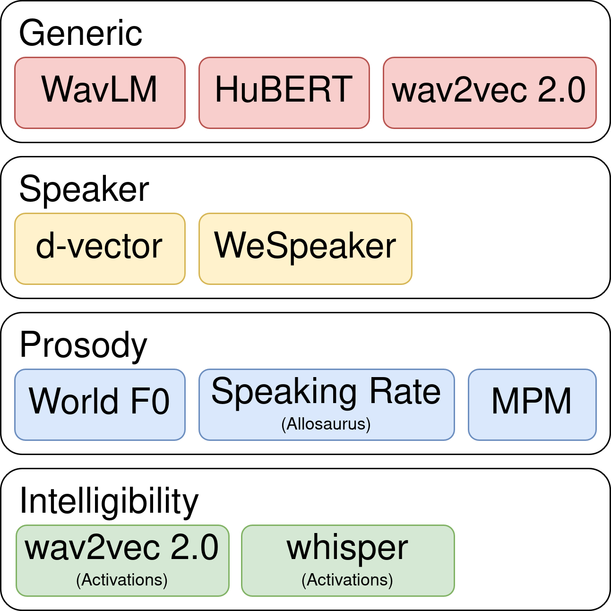
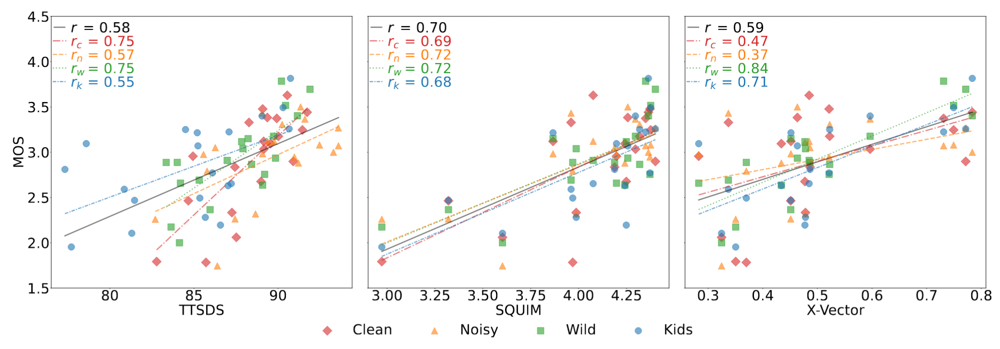
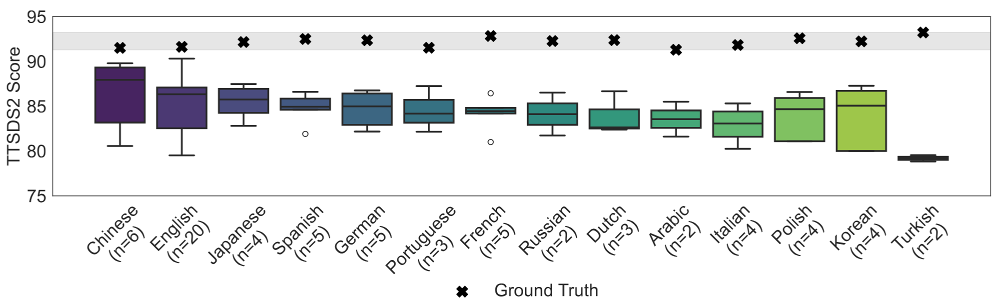

audio generated with Qwen3-TTS (1.7B)
Welcome to the image generation session.
Resources and Benchmark for Evaluating Human-Quality Text-to-Speech Systems
Christoph Minixhofer · Ondřej Klejch · Peter Bell
Centre for Speech Technology Research, University of Edinburgh
We need an objective metric that agrees with humans across domains, languages, and systems.
For a given transcript, infinitely many natural renditions exist
We evaluate distributions, not individual samples.
■ real speech feature distribution ■ synthetic speech feature distribution
If the synthetic distribution matches the real one, the 2-Wasserstein distance \( W_2 \) goes to zero.
\( W_2 \to 0 \)
Unnatural synthetic speech lands elsewhere in feature space — \( W_2 \) grows.
\( W_2 \) large — but large compared to what?
We also compute \( W_2 \) to a set of noise distributions (uniform, Gaussian, zeros, ones) — a reference for "totally unrelated".
0 = indistinguishable from noise · 100 = indistinguishable from real speech

Per-feature \( W_2 \) scores → factor mean → unweighted average = TTSDS2.
20 TTS systems released 2022–2024
open-source, voice-cloning
4 domains
Clean · Noisy · Wild (YouTube) · Kids
11,282 human ratings
MOS · CMOS · SMOS · 200 annotators · $19/hr
Released at hf.co/datasets/ttsds/listening_test
Spearman \( \rho \) vs. human MOS / CMOS / SMOS across 16 objective metrics × 4 domains.
0.5…1 0…0.5 −0.5…0 −1…−0.5 · best in column

SQUIM-MOS and X-Vector similarity cluster while TTSDS2 spreads systems smoothly across the range.
Learned factor weights overfit to training domains, showing the simple mean generalises better under leave-one-domain-out.
| Held-Out | Simple Mean | Learned |
|---|---|---|
| Clean | 0.747 | 0.645 |
| Noisy | 0.590 | 0.514 |
| Wild | 0.752 | 0.658 |
| Kids | 0.606 | 0.853 |
| Training | Gen. | Speak. | Pros. | Intel. |
|---|---|---|---|---|
| Clean | −0.162 | 0.072 | 0.048 | 0.098 |
| Noisy | 0.066 | 0.033 | 0.004 | 0.071 |
| Wild | −0.017 | 0.072 | 0.004 | −0.020 |
| Kids | 0.050 | 0.101 | −0.032 | 0.026 |
| Combined | −0.045 | 0.066 | 0.002 | 0.019 |
Due to these findings, we keep TTSDS2 fully unsupervised.

14-language benchmark
pipeline can be reused for future iterations
only metric with \( \rho > 0.5 \) across all tested domains.
ttsdsbenchmark.com · github.com/ttsds/ttsds · hf.co/datasets/ttsds/listening_test